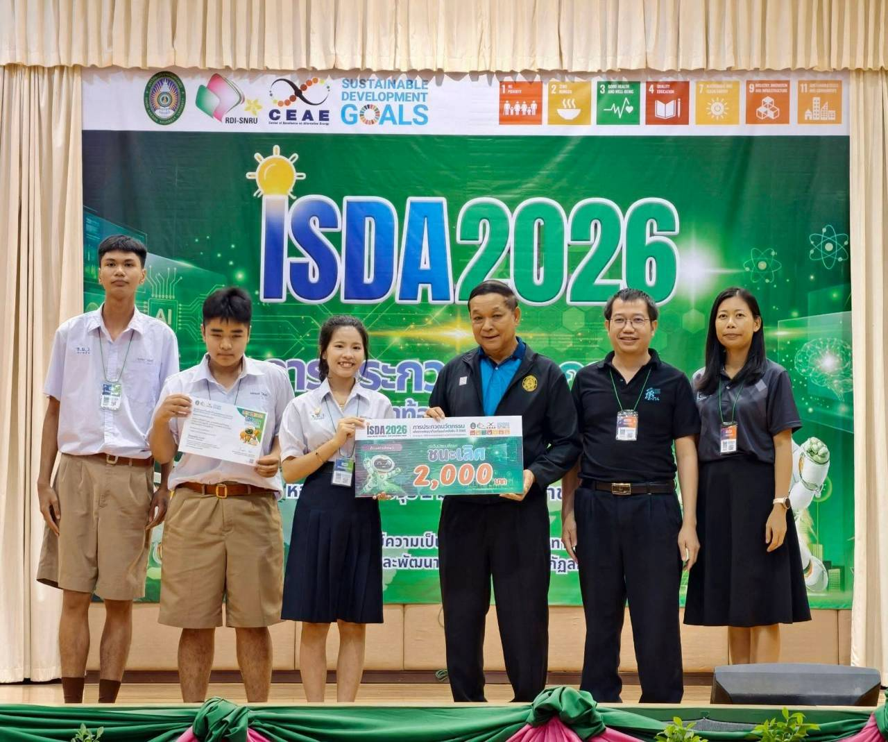
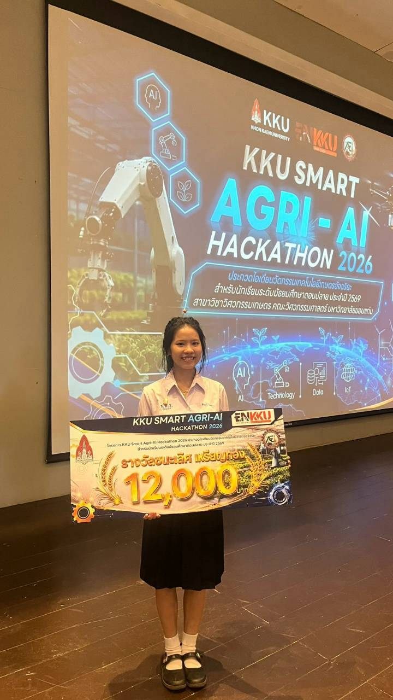

ผลงานและโครงงาน (Portfolio)
นำเสนอโครงงานและชิ้นงานที่เคยลงมือทำจริง (เอาเมาส์ชี้เพื่อขยายดูรายละเอียดง่ายขึ้น ✨)

🔬การแข่งขัน ISDA2026🔬
โครงงานLine up ระบบยืนยันพิกดอัจฉริยะ
ภาพบรรยากาศการจัดซุ้มนิทรรศการสิ่งประดิษฐ์ และนำเสนอผลงานไอทีประจำปีการศึกษา
หน้าที่ของหนู: การทดลองใช้งานแอพลิเคชันหาจุดบกพร่อง และออกแบบหน้าจอแสดงผลเว็บแดชบอร์ดในโทนสีพาสเทลให้ใช้งานง่าย

🔬 AGRI - AI 🔬
โครงงานตู้การเจริญเติบโตของเชื้อราไตรโครเตอร์ม่า
ภาพบรรยากาศการนำเสนอผลงานไอทีประจำปีการศึกษา
หน้าที่ของหนู: เชื่อมต่อบอร์ดไมโครคอนโทรลเลอร์กับเซนเซอร์ และออกแบบหน้าจอแสดงผลเว็บแดชบอร์ดในโทนสีพาสเทลให้ใช้งานง่าย
🔬 I NEW GEN AWARD 🔬
โครงงานบ้านไก่ดำภูพานอํจฉริยะ
ภาพบรรยากาศการจัดซุ้มนิทรรศการสิ่งประดิษฐ์ และนำเสนอผลงานไอทีประจำปีการศึกษา
หน้าที่ของหนู: เชื่อมต่อบอร์ดไมโครคอนโทรลเลอร์กับเซนเซอร์ และออกแบบหน้าจอแสดงผลเว็บแดชบอร์ดในโทนสีพาสเทลให้ใช้งานง่าย